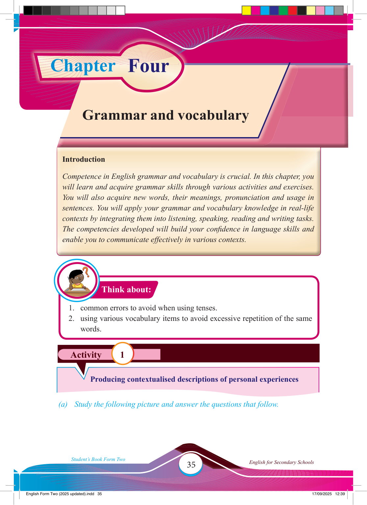

Chapter Four
Activity 1
Think about:
Grammar and vocabulary
Introduction
Competence in English grammar and vocabulary is crucial. In this chapter, you will learn and acquire grammar skills through various activities and exercises.
You will also acquire new words, their meanings, pronunciation and usage in sentences. You will apply your grammar and vocabulary knowledge in real-life contexts by integrating them into listening, speaking, reading and writing tasks.
The competencies developed will build your confi dence in language skills and enable you to communicate effectively in various contexts.
1. common errors to avoid when using tenses.
2. using various vocabulary items to avoid excessive repetition of the same words.
Producing contextualised descriptions of personal experiences
(a) Study the following picture and answer the questions that follow.